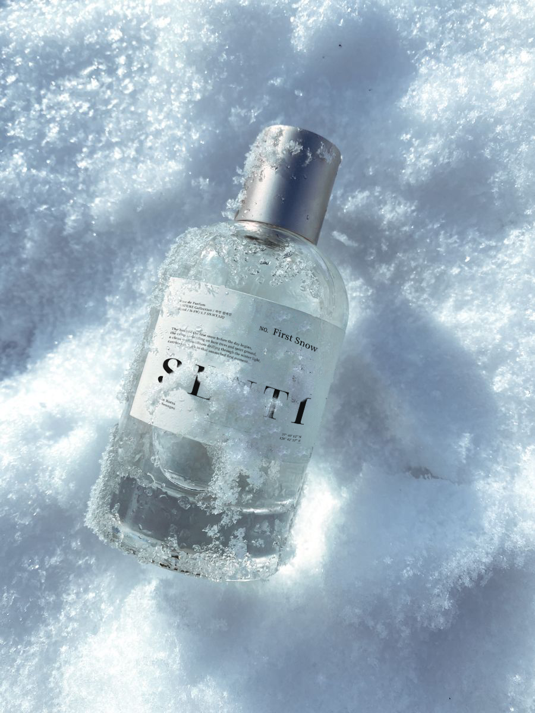
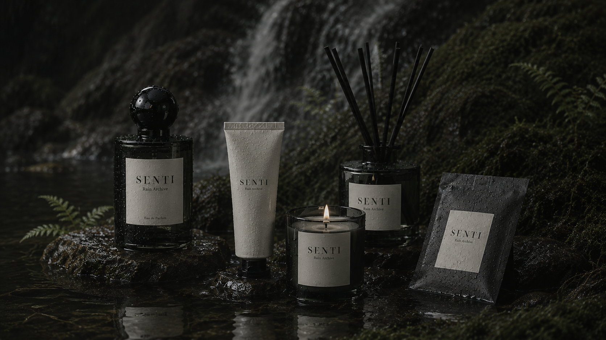
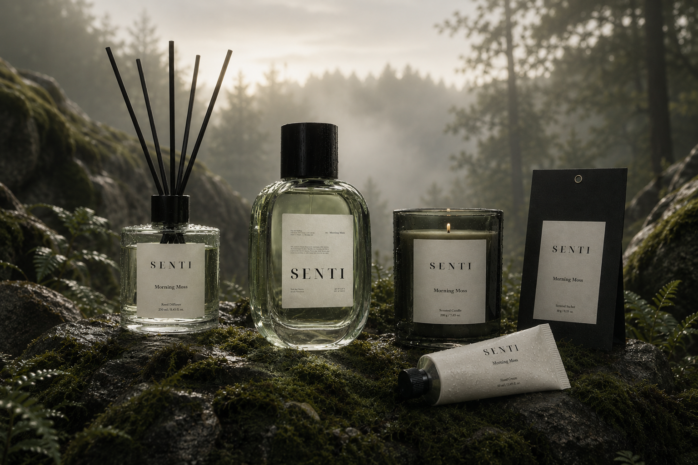
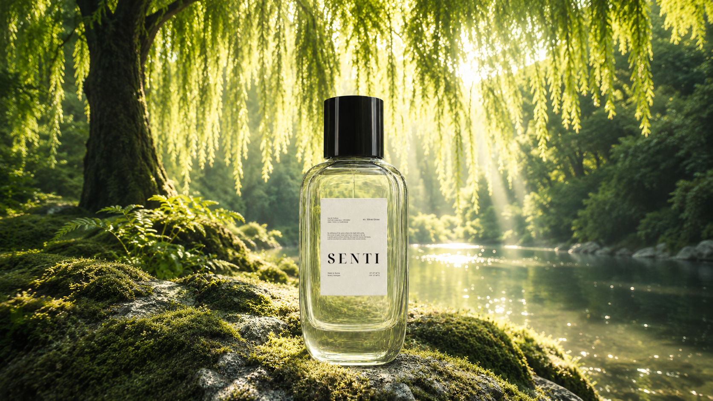

37° 42' 16" N / 128° 35' 09" E
N-DF / 1.7 DW.FG.LIQ
Dawn Forest
Mist over quiet woods.
Fog / Cedarwood /
White musk
$183.50

Falling Petals
Soft petals left in air.
$170.30
First Snow
A clean trace of winter.
$173.30

33° 27' 05" N / 126° 34' 18" E
N-RA / 1.7 RN.AR.LIQ
Rain Archive
After rain, memory remains.
Wet soil / Green leaf /
Clear musk
$168.20

35° 20' 14" N / 127° 43' 38" E
N-MM / 1.7 MS.DW.LIQ
Morning Moss
Cold dew before sunrise.
Moss / Dew /
Soft amber
$172.80

37° 47' 31" N / 128° 32' 44" E
N-SG / 1.7 GV.WD.LIQ
Silent Grove
Stillness under deep trees.
Hinoki / Dry wood /
Calm musk
$123.60